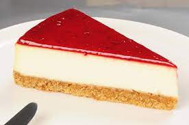

Cheesecake Recipe
Servings: 4-6 Preparation time: 30 minutes Baking time: 1 hour
Ingredients:
- 500 grams cream cheese
- 1 pack of cream
- 1.5 cups granulated sugar
- 4 tablespoons flour
- 4 eggs + 1 egg yolk
- 1 pack of vanilla
For the Base:
- 2 packs of Burçak biscuits
- 100 grams melted butter
- 1 cup finely ground hazelnuts
- Just under half a tea glass of milk
For the Topping Sauce:
- 250 grams raspberries
- 5 tablespoons sugar
- 2 tablespoons corn starch (dissolved in 1 small cup of water)
- 1 cup water
- 1 pack vanilla
Instructions:
- Grind the biscuits and hazelnuts into a fine powder using a food processor.
- Add melted butter and milk, then prepare the base.
- Let raspberries, sugar, and water rest in the fridge for 1 hour, then add the starch and boil. Finally, add vanilla.
- Place the base into the pan, press down, and refrigerate.
- Whip the cream cheese for 3 minutes, add the cream and continue whipping, then add sugar and eggs.
- Add flour and vanilla, pour over the base, and wrap the pan edges with foil.
- Bake in the oven: first 10 minutes at 200°C, then 50 minutes at 160°C.
- Do not open the oven during baking and use a heatproof water container.
- Once slightly cooled, pour the sauce on top, decorate with raspberries, and refrigerate overnight.
Enjoy your meal!